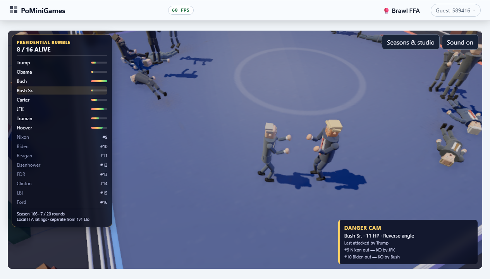
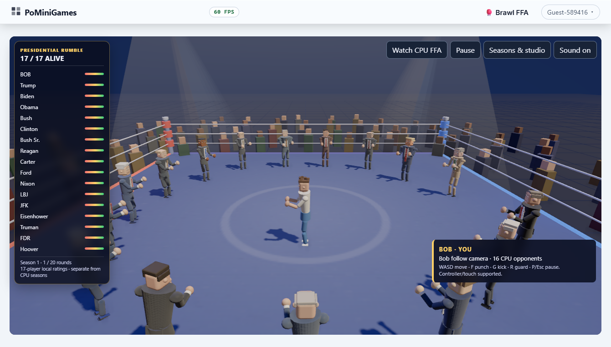
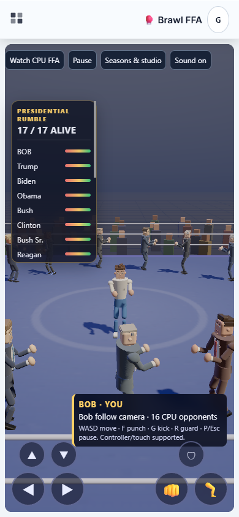

FFA: watch sixteen CPUs, or join as Bob
New 17-player human mode follows Bob. WASD movement, F/G attacks, R guard,
P/Esc pause; controller and touch input share the existing brawler controls.

Before: CPU-only exhibition with danger-camera cuts.

After: Bob plus all sixteen CPUs, player-follow camera, separate local ratings and pause controls.

Mobile: forward/back, strafe, punch, kick and guard controls; Bob stays first in standings.
Final-KO half-speed replays precede the five-second result hold. Reduced motion skips replay.
Sixteen settled ragdolls retire from physics within four seconds without removing their visible poses.
Each president has distinct scripted tactics. The agent lab compares presets against incumbents on
eight paired seeds and saves only strictly improved placements as next-round promotions.